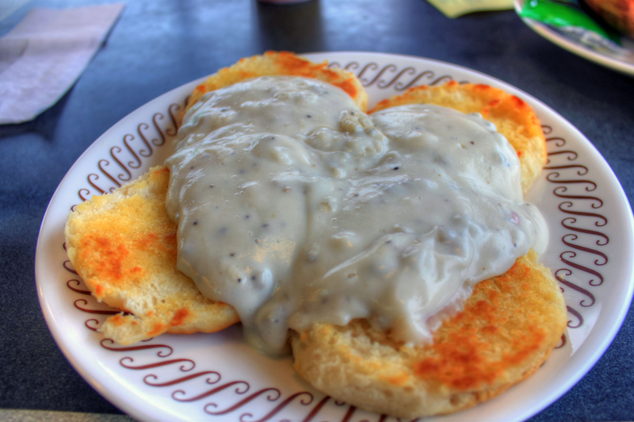

Biscuits and Gravy

Photo via Good Free Photos
Description
Fluffy biscuits covered with homemade sausage gravy. Perfect for any meal when you want a taste of home.
Ingredients
- 2 1/4 cups all-purpose flour
- 4 teaspoons baking powder
- 1 tablespoon white sugar
- 1/2 teaspoon salt
- 1/2 cup shortening
- 1 egg, beaten
- 2/3 cup milk
- 1 tablespoon butter, melted
- 16 ounce package Jimmy Dean pork breakfast sausage
- 1/4 cup butter
- 12 fluid ounces evaporated milk
- 1 1/2 cups water
- salt and ground black pepper to taste
Steps
- Heat the oven to 400 degrees F (200 degrees C), and grease a baking sheet.
- Combine 2 cups of flour with the baking powder, sugar, and salt in a bowl and whisk. Cut the shortening into a flour mixture with a pastry cutter until mixture is crumbly. Add the egg and milk and mix well. Lay dough out onto a floured surface and knead for 1 minute.
- Roll dough with a thickness of 3/4- to 1-inch, cut with a biscuit cutter, and place biscuits onto the baking sheet. Brush tops of the biscuits with melted butter.
- Bake in the preheated oven for 8 to 10 minutes until the biscuits are golden brown.
- Cook sausage in a large skillet over medium heat until browned and crumbly, then drain excess grease. Stir the remaining butter into the sausage, and mix until the butter has melted. Then mix in 1/4 cup flour. Pour the evaporated milk and water into the mixture and bring gravy to a simmer. Once the gravy is simmering, reduce the heat to low, and allow the gravy to thicken for about 5 minutes. Once the gravy is thickened, add salt and black pepper to season to your preference.
- Pour the sausage gravy on top of the biscuits and serve.
Inspired by Allrecipes
Home